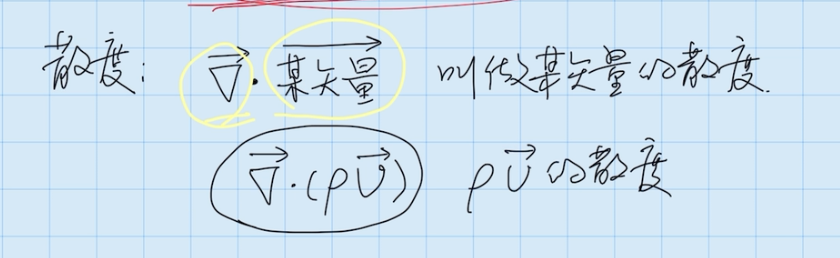

# 流体力学基础# 连续方程{ 积分形式 : ∂ ∂ t ∫ ∫ ∫ p d V + ∬ c s ( ρ g → ) ⋅ d s → = 0 微分形式 : ∂ P ∂ t + ∇ → ⋅ ( ρ U → ) = 0 \begin{cases} \text {积分形式}:\frac{\partial}{\partial t}\int\int\int pdV+\iint_{cs}(\rho\overrightarrow{g})\cdot d\overrightarrow{s}=0\\\\\text {微分形式}:\frac{\partial P}{\partial t}+\overrightarrow{\nabla}\cdot(\rho\overrightarrow{U})=0\end{cases} ⎩ ⎪ ⎪ ⎨ ⎪ ⎪ ⎧ 积分形式 : ∂ t ∂ ∫ ∫ ∫ p d V + ∬ c s ( ρ g ) ⋅ d s = 0 微分形式 : ∂ t ∂ P + ∇ ⋅ ( ρ U ) = 0
# 导数r = Position 位置 ∂ P ∂ t \frac{\partial P}{\partial t} ∂ t ∂ P ∂ P 2 ∂ t 2 \frac{\partial P^2}{\partial t^2} ∂ t 2 ∂ P 2 # 质量守恒方程质量守恒方程在流体力学中是非常重要的。其基本形式为：在一个封闭的系统中，流体的质量不会发生改变。数学上的表述是：流体在任意时刻，通过任意封闭曲面的流量与曲面内部的质量变化率之和等于零。这就是著名的质量守恒定律，也被称为连续性方程。
其定义为
∭ C V ∂ P ∂ t d V + ∫ ∫ ρ v → ⋅ ∂ S → = 0 \iiint_{CV}\frac{\partial P}{\partial t}dV+\int\int\rho\overrightarrow{v}\cdot \partial \overrightarrow{S}=0 ∭ C V ∂ t ∂ P d V + ∫ ∫ ρ v ⋅ ∂ S = 0
左边是体积积分ρ \rho ρ ρ \rho ρ t t t
第一项叫控制体内流体总质量的增长率，第二项叫通量，表示单位时间流出控制体的流体质量
他的微分形式 是这样的
∂ P ∂ t + ∂ ( ρ u ) ∂ x + ∂ ( ρ v ) ∂ y + ∂ ( ρ w ) ∂ z = 0 \frac{\partial P}{\partial t}+\frac{\partial\left(\rho u\right)}{\partial x}+\frac{\partial\left(\rho v\right)}{\partial y}+\frac{\partial\left(\rho w\right)}{\partial z}=0 ∂ t ∂ P + ∂ x ∂ ( ρ u ) + ∂ y ∂ ( ρ v ) + ∂ z ∂ ( ρ w ) = 0
uvw 是速度矢量的三个分量
所以可以写成
v → = u i → + v j → + w k → \overrightarrow{v}=u\overrightarrow{i}+v\overrightarrow{j}+w\overrightarrow{k} v = u i + v j + w k
乘上ρ \rho ρ
ρ v → = ( ρ u ) i → + ( ρ v ) j → + ( ρ w ) k → \rho\overrightarrow{v}=(\rho u)\overrightarrow{i}+(\rho v)\overrightarrow{j}+(\rho w)\overrightarrow{k} ρ v = ( ρ u ) i + ( ρ v ) j + ( ρ w ) k
然后我们创造一个矢量 a，然后 dot Pv 矢量，就是后面一部分，这时候就是微分方程的后三项，这时候可以写成∇，就是哈密顿算子，
a → = ∂ ∂ x i + ∂ ∂ y j → + ∂ ∂ z k → a → ⋅ ( p v → ) = ∂ ( p u ) ∂ x + ∂ ( p v ) ∂ y + ∂ ( p w ) ∂ z ∇ = ∂ ∂ x i + ∂ ∂ y j → + ∂ ∂ z k → \begin{gathered}\overrightarrow{a}=\frac{\partial}{\partial x}i+\frac{\partial}{\partial y}\overrightarrow{j}+\frac{\partial}{\partial z}\overrightarrow{k} \\\overrightarrow{a}\cdot(p\overrightarrow{v})=\frac{\partial(pu)}{\partial x}+\frac{\partial(pv)}{\partial y}+\frac{\partial(pw)}{\partial z} \\\nabla=\frac{\partial}{\partial x}i+\frac{\partial}{\partial y}\overrightarrow{j}+\frac{\partial}{\partial z}\overrightarrow{k} \end{gathered} a = ∂ x ∂ i + ∂ y ∂ j + ∂ z ∂ k a ⋅ ( p v ) = ∂ x ∂ ( p u ) + ∂ y ∂ ( p v ) + ∂ z ∂ ( p w ) ∇ = ∂ x ∂ i + ∂ y ∂ j + ∂ z ∂ k
这时候就是微分形式的质量守恒方程
∂ P ∂ t + ∇ → ⋅ ( ρ U → ) = 0 \frac{\partial P}{\partial t}+\overrightarrow{\nabla}\cdot(\rho\overrightarrow{U})=0 ∂ t ∂ P + ∇ ⋅ ( ρ U ) = 0
# 散度这时候两个某矢量点乘是个标量，这个叫散度，散度的物理意义就是单位体积的某通量，这里乘于ρ \rho ρ
速度散度有两个理解
单位体积的体积变化率 单位时间的体积变化比例 
# 梯度梯度就是乘一个标量
微分形式的第二项含义就是散度
# 特殊情况下∭ C V ∂ ρ ∂ t d V + ∬ C S ρ v → ⋅ ∂ S → = 0 \iiint_{CV}\frac{\partial \rho}{\partial t}dV+\iint_{CS} \rho\overrightarrow{v}\cdot \partial \overrightarrow{S}=0 ∭ C V ∂ t ∂ ρ d V + ∬ C S ρ v ⋅ ∂ S = 0
1、定常情况下，意思是流体质量 不随时间的变化，所以对 t 求导等于 0，所以第一项就没了，剩下一项的意思就是，积分形式就是通量等于 0，微分形式就是无散度
积分形式：∬ C S ( ρ v → ) ⋅ d s → = 0 \iint_{CS}(\rho\overrightarrow{v})\cdot d\overrightarrow{s}=0 ∬ C S ( ρ v ) ⋅ d s = 0 微分形式：∇ → ⋅ ( p U → ) = 0 \overrightarrow{\nabla}\cdot(p\overrightarrow{U})=0 ∇ ⋅ ( p U ) = 0 2、在不可压缩流体 情况下，ρ \rho ρ
微分形式就是，对 t 求导就是 0，后面同时处于 p 就是下面红色那样
∂ P ∂ t + ∇ → ⋅ ( p v → ) = 0 ρ ∇ → ⋅ U → = 0 ∇ ⋅ V → = 0 \begin{aligned}\frac{\partial P}{\partial t}+\overrightarrow{\nabla}\cdot(p\overrightarrow{v})=0\\{\rho\overrightarrow{\nabla}\cdot\overrightarrow{U}=0}\\{\nabla\cdot\overrightarrow{V}=0}\end{aligned} ∂ t ∂ P + ∇ ⋅ ( p v ) = 0 ρ ∇ ⋅ U = 0 ∇ ⋅ V = 0
所以不可压缩流体 的速度条件是散度等于 0 。这里可以看成速度前面乘于一个 1，而这个 1 表示体积，所以这里可以表示，散度就是单体体积的体积通量，因为这里散度等于 0，所以体积散度的体积变化率等于 0，那么流体就是不可压缩
# 微元体积元分析推到微分形式质量守恒对于一个大控制体来说，可以分成一个个小微小控制体 ，这时候，对于一个小控制体来说，要研究一个速度的流向，就是左边面积流向右边，前面流向后面，上面流向下面，那么对于左边而言，那么他的就是通量，对于右边而言，通过一阶泰勒展开，他就是ρ u \rho u ρ u 偏导 ，就是 x 方向的变化率 ，乘一个 dx 就是变化量 ，当他们左面和右面相加（蓝框相加）就是最下面的黄色框
左边
ρ u S 右边 = ρ u d y d z \rho u S_{右边}= \rho udydz ρ u S 右 边 = ρ u d y d z
右边
− [ ρ u + δ ( ρ u ) ] = [ ρ u + ∂ ( ρ u ) ∂ x ⋅ d x ] S t = [ ρ u + ∂ ( ρ u ) ∂ x d x ] d y d z = − p u d y d z − ∂ ( f u ) ∂ x d x d y d z = − ρ u d y d z − ∂ ( ρ u ) ∂ x d V \begin{gathered}-\left[\rho u+\delta\left(\rho u\right)\right]=\left[\rho u+\frac{\partial\left(\rho u\right)}{\partial x}\cdot dx\right]S_{t} \\=\left[\rho u+\frac{\partial\left(\rho u\right)}{\partial x}dx\right]dydz \\=-pudydz-\frac{\partial(fu)}{\partial x}dxdydz \\=-\rho udydz-\frac{\partial(\rho u)}{\partial x}dV \end{gathered} − [ ρ u + δ ( ρ u ) ] = [ ρ u + ∂ x ∂ ( ρ u ) ⋅ d x ] S t = [ ρ u + ∂ x ∂ ( ρ u ) d x ] d y d z = − p u d y d z − ∂ x ∂ ( f u ) d x d y d z = − ρ u d y d z − ∂ x ∂ ( ρ u ) d V
左边和右边相加就是，最后就是
ρ u d y d z − ρ u d y d z − ∂ ( ρ u ) ∂ x d V − ∂ ( ρ u ) ∂ x d V \rho udydz - \rho udydz-\frac{\partial(\rho u)}{\partial x}dV\\-\frac{\partial(\rho u)}{\partial x}dV ρ u d y d z − ρ u d y d z − ∂ x ∂ ( ρ u ) d V − ∂ x ∂ ( ρ u ) d V
那么其他方向都是一样，因为质量守恒规定
控制体内流量总质量增长率 = 单位时间流入控制体内的流体质量
所以左边是原来的ρ \rho ρ 时间偏导 乘体积，去等式两边同时处于体积就是微分公式的质量守恒
∂ ρ ∂ t d V = − [ ∂ ( ρ u ) ∂ x + ∂ ( ρ u ) ∂ y + ∂ ( ρ w ) ∂ z ] d V ∂ P ∂ t d V + [ ∂ ( p u ) ∂ x + ∂ ( p u ) ∂ y + ∂ ( p w ) ∂ z ] d V = 0 ∂ P ∂ t + ∂ ( p u ) ∂ x + ∂ ( p u ) ∂ y + ∂ ( p w ) ∂ z = 0 \frac{\partial\rho}{\partial t}dV=-\left[\frac{\partial\left(\rho u\right)}{\partial x}+\frac{\partial\left(\rho u\right)}{\partial y}+\frac{\partial\left(\rho w\right)}{\partial z}\right]dV\\\frac{\partial P}{\partial t}dV+\left[\frac{\partial(pu)}{\partial x}+\frac{\partial(pu)}{\partial y}+\frac{\partial(pw)}{\partial z}\right]dV=0\\\frac{\partial P}{\partial t}+\frac{\partial(pu)}{\partial x}+\frac{\partial(pu)}{\partial y}+\frac{\partial(pw)}{\partial z}=0 ∂ t ∂ ρ d V = − [ ∂ x ∂ ( ρ u ) + ∂ y ∂ ( ρ u ) + ∂ z ∂ ( ρ w ) ] d V ∂ t ∂ P d V + [ ∂ x ∂ ( p u ) + ∂ y ∂ ( p u ) + ∂ z ∂ ( p w ) ] d V = 0 ∂ t ∂ P + ∂ x ∂ ( p u ) + ∂ y ∂ ( p u ) + ∂ z ∂ ( p w ) = 0
奥高公式
N-S 动量守恒方程